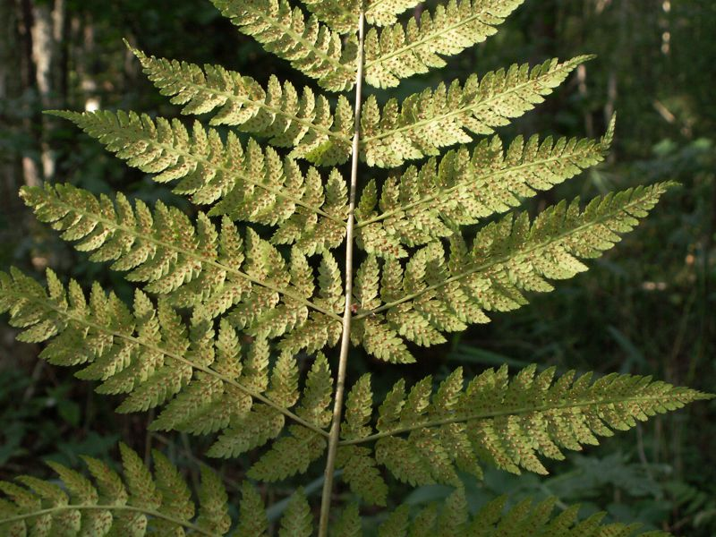

Breitblättriger Dornfarn
Dryopteris dilatata
Der Breitblättrige Dornfarn, auch Großer Dornfarn, hat breitgefächerte, dreifach gefiederte Wedel mit stachlspitzigen Blättchen. Bei Verwendung einer Lupe werden Drüsenhaare sichtbar. Die Stielbasis ist reichlich mit Spreuschuppen besetzt.